Boss attack overhaul · boss 3 of 6 · approved and live in Studio
Prosecutor Big Cheese: Cheese Roll
His roll, rebuilt on the Megalodon benchmark with every beat keyed in Blender to the server's own timing. With two or more players in the Food Court, two cheese wedges also pop off him and tumble down lanes at the others. That's the Wheel Split. Approved and live in the place since 2026-10-20.
Cinematic cut: front three-quarter on the salute, the tip and the burnout, a camera tracking the roll, then close on the stop and the hop back upright. Real speed.
Windup 1.2 s
Roll 0.92 s
Recover 0.6 s
01.22.122.72 s
Widths are the server's real seconds (BossService "Line" + Config): a 110-stud roll at 120 studs/s. The roll itself is worked out in the game from the distance he has really travelled, so his face never slips on the floor, whatever length the roll is.
Storyboard
A · Anticipation windup 0 – 1.2 s
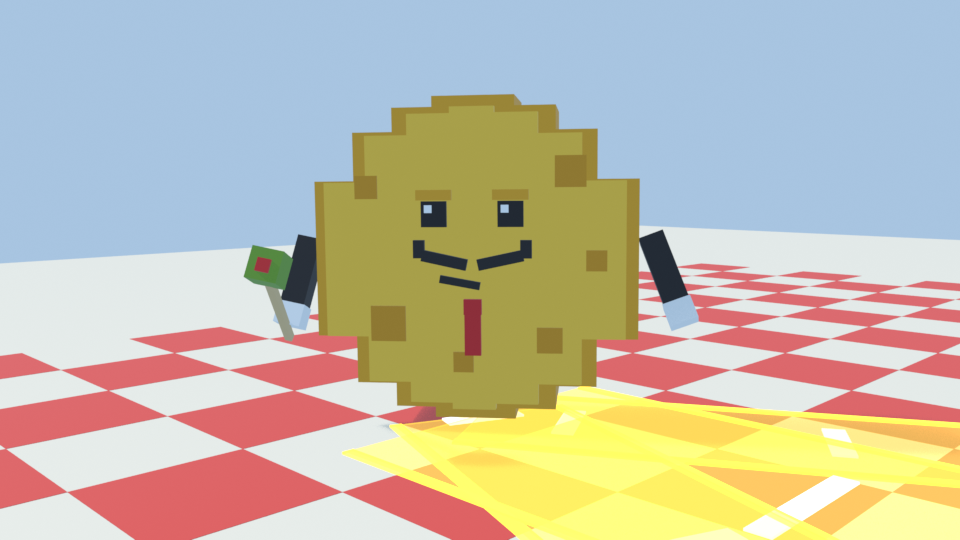
0.06 s Notice: his smug lids snap wide open with a little bounce, and he turns to face his target.
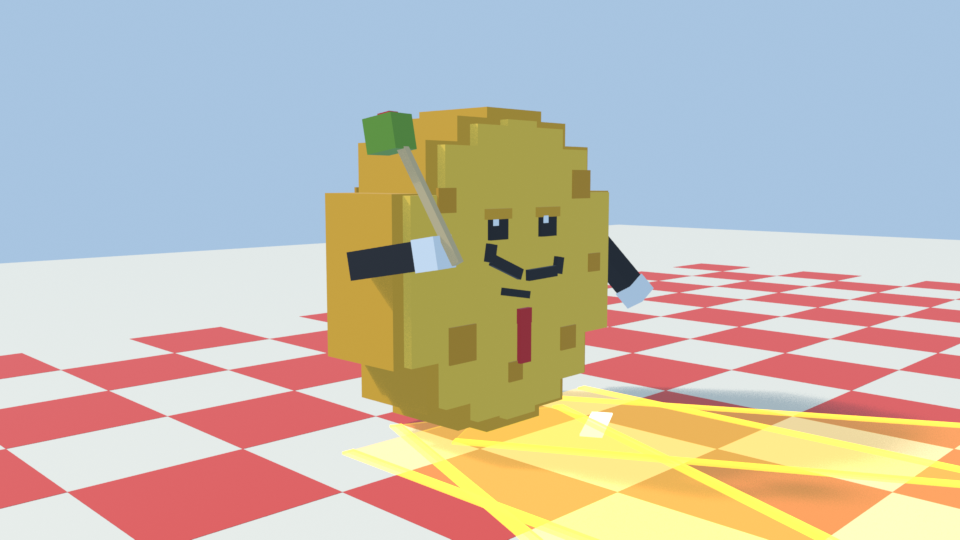
0.30 s En garde: the cocktail-stick sword goes up in a salute. The olive gleams and he twirls his moustache.
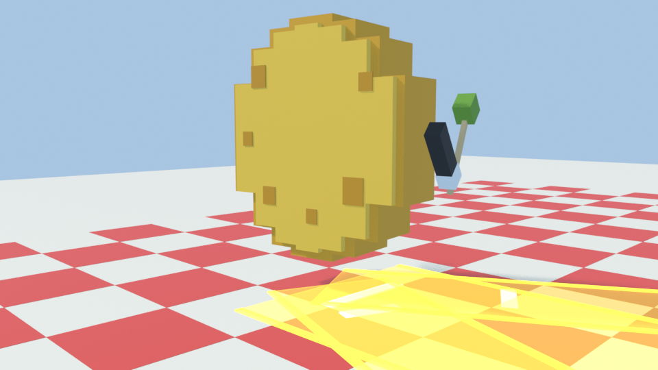
0.52 s The tip: he hops and makes a quarter turn in the air onto his edge.
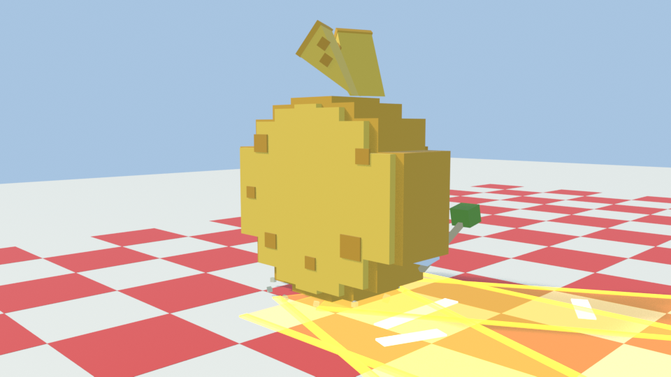
0.66 s He lands with a jiggly squash and a dust ring. With 2+ players, two wedges pop off his top, and his arms tuck into the wheel.
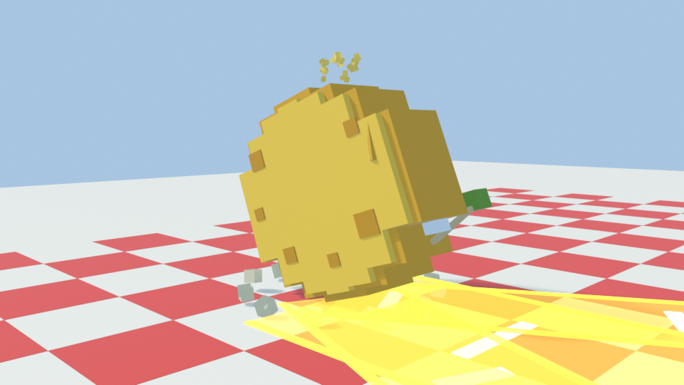
0.84 s Rock back: he rolls back a little, loading up.
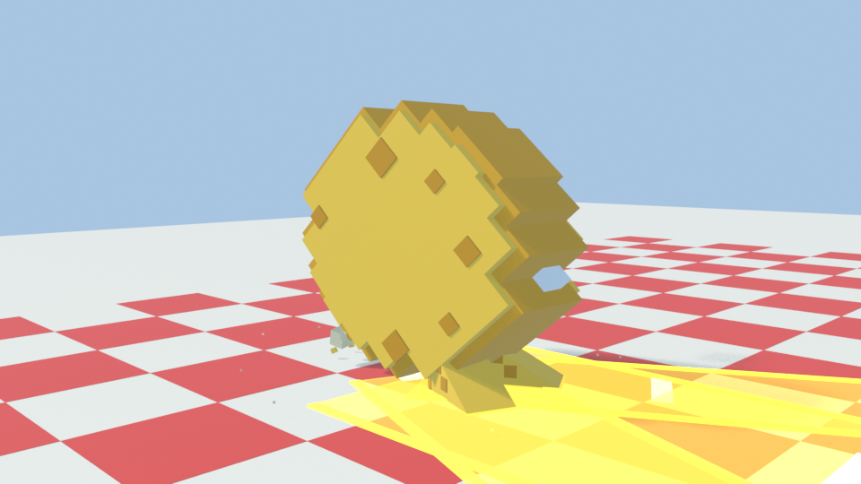
1.12 s Burnout: he spins in place, faster and faster, with dust and crumbs flung out behind. One whole turn, so the roll starts upright.
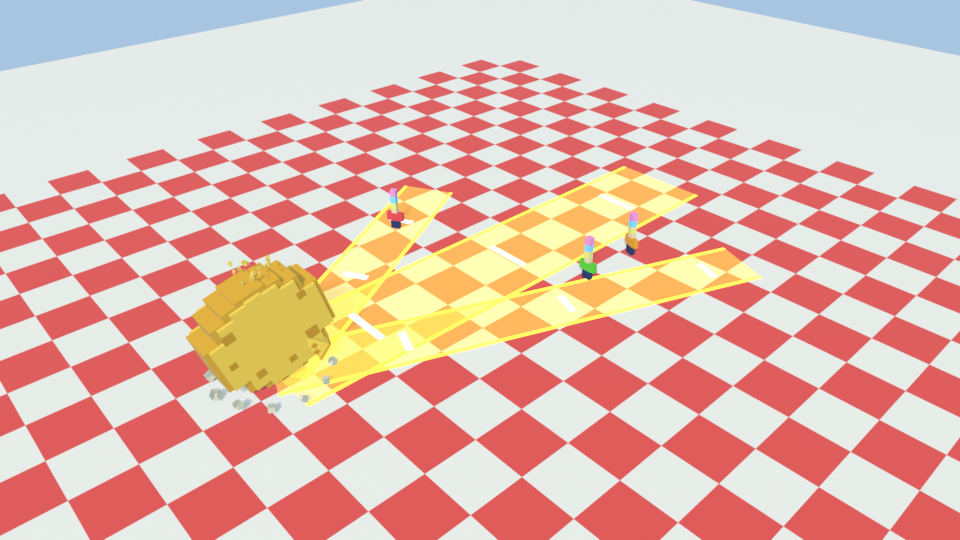
0.90 s From a player's height: his 22-wide lane plus a 12-wide wedge lane for each other player. All show from the windup's first frame.
B · Attack roll, linear on the server's path
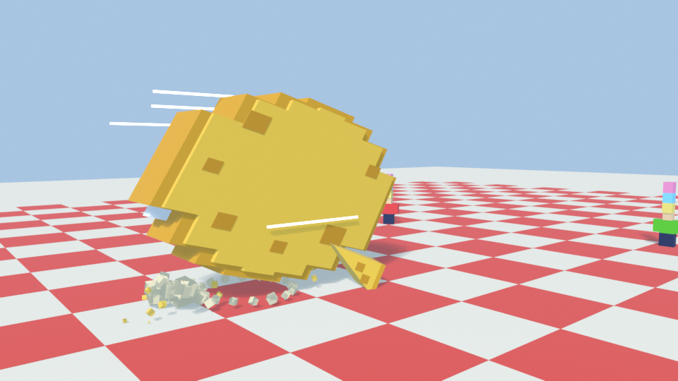
+0.05 s Launch: he pops forward, stretched along the run, with a dust ring at the start.
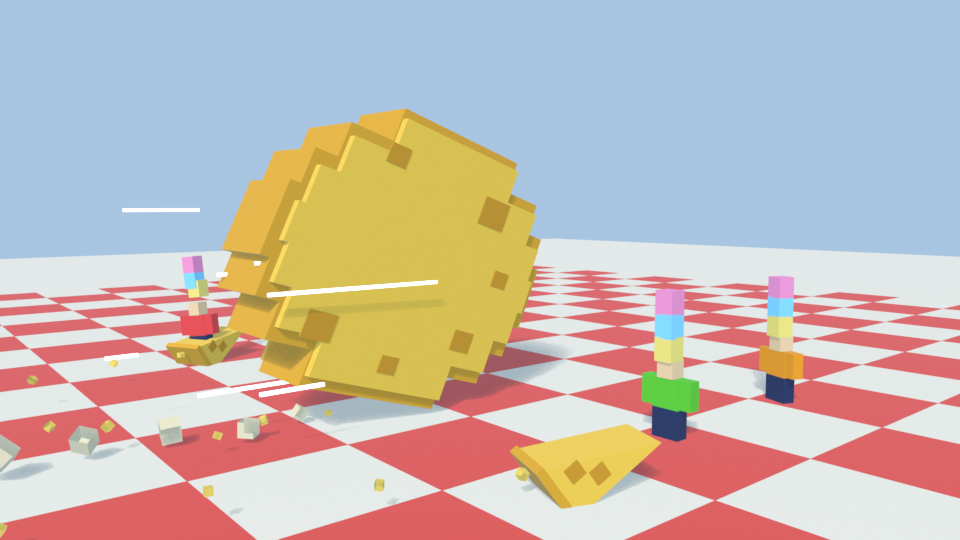
+0.45 s Roll: his block rim bumps over the floor like a brick wheel would, with crumbs and dust behind and speed streaks.
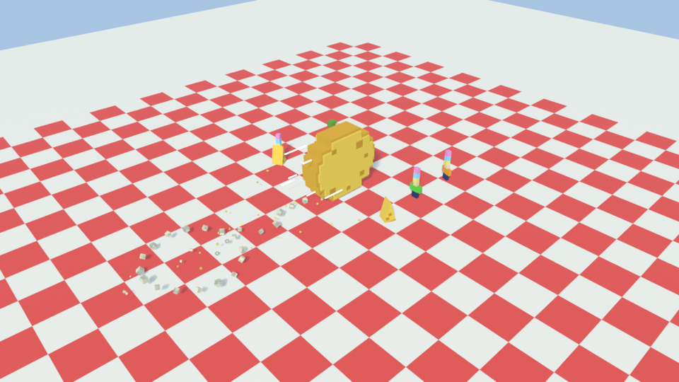
+0.40 s Wheel Split: the wedges tumble end over end down their lanes at 110 studs/s and crumble at the end.
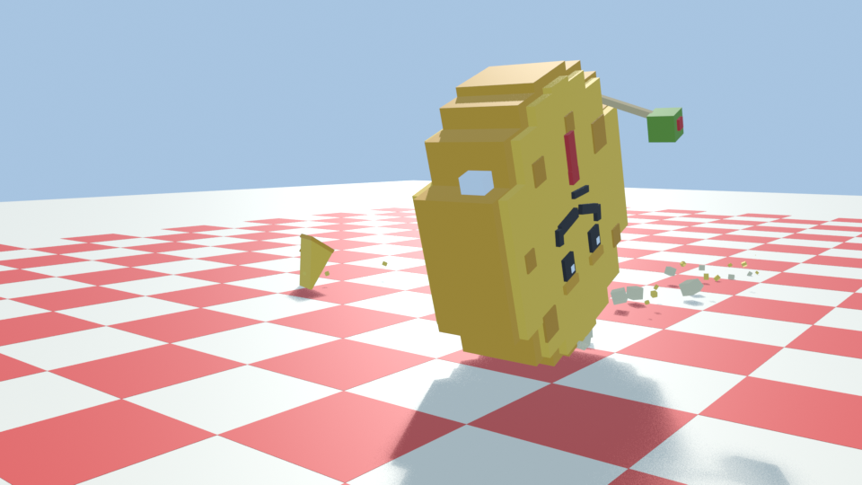
last 0.2 s Brake: he squashes along the run as he digs in and throws a plume of dust forward.
D · Recovery recover 0.6 s
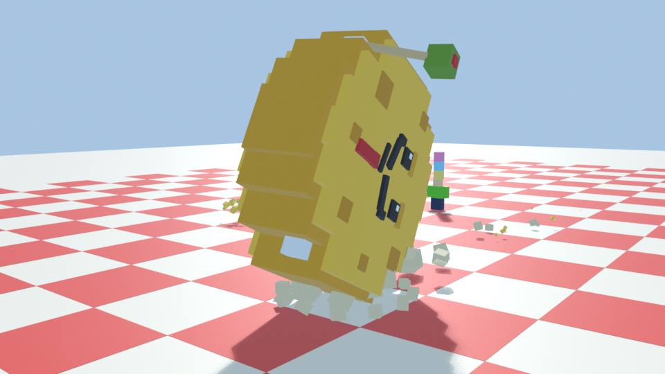
0.06 s Settle: he wobbles like a coin coming to rest.
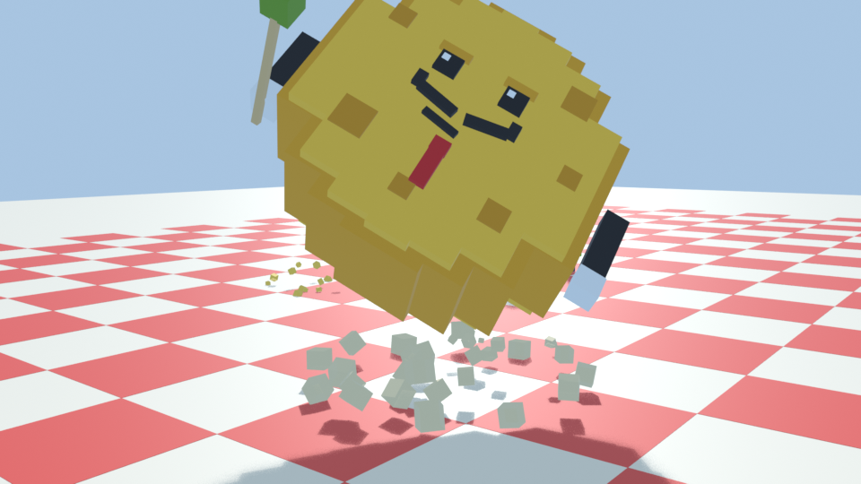
0.28 s Hop upright: he hops, turns back to face the front and rolls upright in the air, and his arms pop back out.
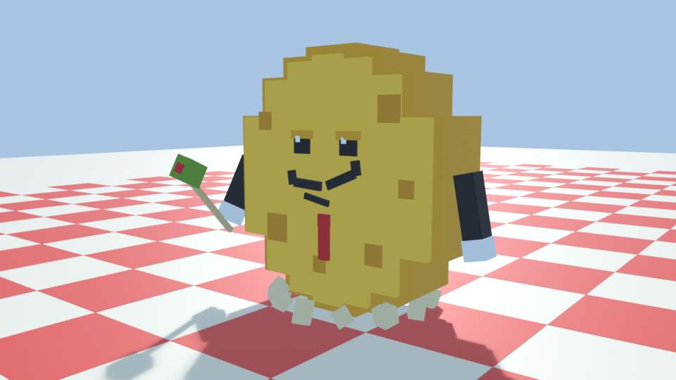
0.50 s Landing: a jiggly squash, a boing, then a smug moustache twirl.
Wheel Split (2+ players)
With one player in the zone nothing changes. With two or more, the server picks up to two other players within 90 studs as the windup begins and marks a 12-wide lane at each one. The wedges pop off as he lands on his edge, wait at the lane starts, and tumble down the lanes from the moment he starts rolling. A player at base speed is out of a lane in 0.19 s. A hit works like any other hit. This uses the same lane add-on as the Megalodon's sand sharks, so the server code didn't change.
What changed
Model: 3 to 5 moving parts with the same 47 blocks: his eyelids and moustache now move on their own.
Animation: five Blender clips (windup, launch, roll loop, brake, recover) with squash, stretch and cheesy jiggle. Before, his rim corners sank up to 1.2 studs into the floor every turn, his arms and sword swept through it, and after a roll he unwound backwards on the spot. Now the wheel bumps over its corners, his arms tuck in, and he hops back upright.
Effects: the olive's gleam, landing dust, wedges popping off and crumbling, burnout dust and crumbs, a launch ring, the roll's trail and the brake plume. All use textures the game already has.
Sound: a glint, a thud on landing, a wedge pop, grinding gears for the burnout, the roll whoosh, a boing on the hop, and a crumble. All come from the game's licensed set.
Checked
Timing: clip lengths match Config (windup 1.2) and BossService (recover 0.6), and the automated check covers it.
Clipping: every block was tested against every other part, every frame. The worst left is 0.27 studs (the salute arm against his rim, for one frame) on a 20-stud boss. Nothing goes more than 0.06 studs into the floor.
Arms tucked in the wheel while he rolls are hidden by design and counted separately.
The other bosses: the Megalodon's and the Senior Partner's models and clips are unchanged.
Repo checks: all Luau compiles, 42 config checks pass and the sim tests pass.
Playtested in Studio (1 player): the whole roll plays from the clips with no script errors. The playtest caught the wheel dipping about a third of a stud into the floor while it spun and squashed at the same time. The game now lifts a rolling wheel so its corners never go below the floor.
Status
Approved and in Studio. The boss models were rebuilt and the clips, client and Config pushed on 2026-10-20.
Wheel Split: 12-wide lanes, up to two other players, within 90 studs, 110 studs/s.
Still to do: a 3-player playtest of the Wheel Split, then the next boss.